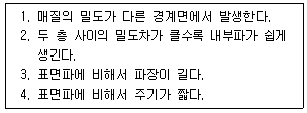
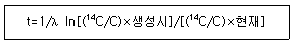
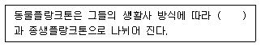
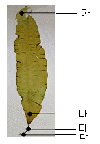

해양조사산업기사 (2010-05-09 기출문제)
1과목: 물리해양학
1. 조석형태수(F)가 0.25이하인 조석의 형태는?
- 일주조형
- 반일주조형
- 혼합조형
- 태음분조형
(정답률: 98%)

2. 취송류에 관한 설명 중 틀린 것은?
- 북반구에서 해수표면의 표류는 풍향우편 45°방향으로 일어난다.
- 수심이 깊어질수록 풍향과 교각은 커지고 속력은 떨어진다.
- 마찰저항수심은 풍속이 클수록 크나 위도와는 관계없다.
- 남반구에서 해수는 전체적으로 바람의 좌측 직각방향으로 흐른다.
(정답률: 82%)
3. 천해파의 전파속도에 영향을 주는 요인은?
- 수심
- 파장
- 진폭
- 주기
(정답률: 81%)
4. 대기압을 무시한다면 수심 20m에서의 수압은 약 얼마인가?
- 0.1기압
- 0.5기압
- 1기압
- 2기압
(정답률: 85%)
5. 현재 해양 전체의 염분에 대한 설명으로 가장 적절한 것은?
- 지구 온난화에 따른 증발의 증가로 인해 염분은 증가한다.
- 강수량이 증가하므로 염분은 감소한다.
- 용존물질이 증가하므로 염분은 감소한다.
- 해양오염으로 인하여 염분도 증가한다.
(정답률: 56%)
6. 북반구의 Two-layer ocean에 밀도측정 결과 밀도면의 경계가 동에서 서로 올라가 있다(동저, 서고) 만약 하층의 유속이 없다면 해표면의 경사는?
- 동고, 서저
- 서고,
- 남고, 북저
- 북고, 남저
(정답률: 85%)
7. 물리적 성질의 변화가 염분과 반대의 경향을 갖는 곳은?
- 해수의 전기전도도
- 해수의 밀도
- 음파의 전파속도
- 해수의 결빙온도
(정답률: 78%)
8. 해양표층의 흐름에 직접적으로 영향을 주는 요소와 거리가 먼 것은?
- 바람의 작용
- 용존산소
- 해면의 경사
- 밀도의 불평등한 분포
(정답률: 90%)
9. 조석의 4대 분조가 아닌 것은?
- M2조
- S2조
- O1조
- N2조
(정답률: 75%)
10. 에크만 나선의 형성원인과 가장 관계 깊은 것은?
- 해수 수평밀도 구배
- 수심
- 해수 수평압력 구배
- 전향력
(정답률: 83%)
11. 다음 수온 측정 장비 중 회수가 불가능한 장비는?
- MBT
- XBT
- BT
- CTD
(정답률: 65%)
12. 시그마-T는 다음 중 어느 것을 나타내는가?
- 밀도
- 온도
- 전기전도도
- 압력
(정답률: 66%)
13. 내부파에 대해 옳게 설명한 것으로만 짝지어진 것은?

- 1, 2
- 1, 3
- 2, 3
- 3, 4
(정답률: 66%)
14. 다음 중 인공위성으로 관측이 가장 어려운 물리량은?
- 수온
- 염분
- 해면고도
- 해상풍
(정답률: 92%)
15. 염분이 24.7‰보다 클 때 해수 결빙온도가 최대밀도를 보이는 수온과 관계는?
- 최대밀도를 보이는 수온이 높다.
- 결빙온도가 높다.
- 최대밀도를 보이는 온도와 결빙온도는 같다.
- 결빙온도와 최대밀도의 온도는 불변이다.
(정답률: 42%)
16. 천해파의 위상속도와 군속도의 비교가 옳은 것은?
- 위상속도가 항상 군속도보다 빠르다.
- 위상속도가 항상 군속도보다 늦다.
- 위상속도와 군속도는 같다.
- 주기와 파장에 따라 위상속도가 군속도보다 빠를 수도 늦을 수도 있다.
(정답률: 84%)
17. 지구-달 체계에 있어서 기조력이 작용하더라도 조석현상이 일어나지 않는 경우는 어떠한 가정하에 일어나는가?
- 달과 태양이 같은 위도에 있는 경우
- 지구의 자전주기가 달의 공전주기와 같을 경우
- 달이 자전을 하지 않을 겨우
- 지구가 자전을 하지 않을 겨우
(정답률: 94%)
18. 파의 분산에 대한 설명 중 옳은 것은?
- 심해파는 분산파이다.
- 천해파는 수심이 얕을수록 분산이 크다.
- 심해파는 파고가 클수록 분산이 크다.
- 심해파보다 천해파의 분산이 크다.
(정답률: 50%)
19. 난류에 대한 설명 중 틀린 것은?
- 불규칙적 운동을 한다.
- 직선운동을 한다.
- 여러 가지 운동규모를 갖는다.
- 혼합을 일으킨다.
(정답률: 74%)
20. 해류가 발생하는 원인 중에서 가장 근본적인 것은?
- 저위도에서 무역풍이, 중위도에서 편서풍이 분다.
- 대규모 해류는 전향력의 영향을 지배적으로 받는다.
- 중력으로 인해서 무거운 물은 가라앉고 가벼운 물은 뜬다.
- 태양복사에 의한 가열효과가 위도에 따라 다르다.
(정답률: 61%)
2과목: 화학해양학
21. 해양관측, 특히 선상작업에 많이 사용되는 다음 방사성 핵종 중 반감기가 가장 짧은 것은?
- 14C
- 7Be
- 234Th
- 210Po
(정답률: 69%)
22. 외양역에 있어서 용존산소의 전형적인 수직농도 분포 특성에 대한 설명 중 옳은 것은?
- 용존산소는 표층부근에서 높고, 수심이 깊어질수록 계속적으로 감소한다.
- 용존산소 극소층은 수온약층 상부에서 존재한다.
- 중층에서보다 광합성층에서 용존산소농도가 낮아진다.
- 용존산소 극소층은 수온약층 바로 아래 수층에 존재한다.
(정답률: 76%)
23. 지구 온난화를 일으키는 주 온실가스가 아닌 것은?
- 이산화탄소
- 메탄
- 이산화질소
- 헬륨
(정답률: 88%)
24. 다음은 산소에 대한 불활성 기체로 해양에 존재한다. 불활성 가스가 아닌 것은?
- He
- Ar
- Ne
- N
(정답률: 82%)
25. 해수의 주요성분 중 보존성 성분이 아닌 것은?
- Na+
- Cl-
- K+
- NH4+
(정답률: 82%)
26. 심층해수 영양염의 농도분포가 바르게 된 것은?
- 북대서양<남대서양<북태평양<남태평양
- 북대서양<남대서양<남태평양<북태평양
- 남태평양<북태평양<남대서양<북대서양
- 북태평양<남태평양<북대서양<남대서양
(정답률: 80%)
27. 해양 표층수에서 겉보기 산소요구량이 (-)값을 보인다면 무엇 때문이라 생각되는가?
- 광합성
- 미생물 분해
- 해양대기간의 기체교환
- 유기물 산화
(정답률: 77%)
28. 해수 중의 나트륨에 관한 설명 중 틀린 것은?
- 해수에 가장 풍부한 양이온이다.
- 주로 암석의 풍화작용에서 공급된다.
- 나트륨이 염화물보다 많다.
- 이온의 형태로 존재한다.
(정답률: 82%)
29. 일반 해수의 pH 범위에서 가장 풍부한 탄산염의 형태는?
- H2CO3
- HCO3-
- CO32-
- CaCO3
(정답률: 70%)
30. 심해저의 영양염을 표층 가까이 운반하는 가장 중요한 해양 현상은?
- 용승현상
- 확산작용
- 해류작용
- 파도작용
(정답률: 91%)
31. 14C를 이용하여 침강한 심층수가 침강이후 경과한 시간(심층수의 나이)을 아래 식으로 측정한다. 이 식으로 심층수의 나이를 측정할 때 북태평양에서는 대략 몇 년 정도인가?

- 100년
- 1600년
- 5000년
- 10000년
(정답률: 71%)
32. 해수의 전알칼리도(TA)를 나타낸 다음 식 중 맞는 것은?
- TA=[HCO3-]+2[CO32-]+[B(OH)4-]+[OH-]-[H+]
- TA=[HCO3-]+[CO32-]+2[B(OH)4-]+[OH-]-[H+]
- TA=[HCO3-]+2[CO32-]+2[B(OH)4-]+[OH-]-[H+]
- TA=2[HCO3-]+[CO32-]+[B(OH)4-]+[OH-]-[H+]
(정답률: 60%)
33. 유류(oil) 오염에 대한 설명 중 틀린 것은?
- 유류오염에 의한 독성은 주로 용존성 방향족 물질에 의한다.
- 유류오염은 해저에서 자연적으로 분출되는 원유에 의해서도 일어난다.
- 유류는 해저로 침강이 되지 않기 때문에 저서생물에 피해는 없다.
- 해수 중에서 유류는 생물학적으로 분해가 가능하며 이 때 용존산소가 소모된다.
(정답률: 87%)
34. 오염물질 중 둘 또는 그 이상의 물질들이 합하여 작용하는 효과는 각각의 작용의 단순한 합으로부터 예상되는 효과보다 크다. 이러한 효과를 말하는 것은?
- 급성중독
- 상승작용
- 만성중독
- 치사용량
(정답률: 78%)
35. 일반 외양역에서 인산염과 질산염의 극대층이 나타나는 수층은?
- 유광층
- 수온약층 바로 아래 수층
- 심층
- 수온약층 바로 윗 수층
(정답률: 79%)
36. 해양환경수질등급 기준에서 해역의 등급 Ⅰ은 어떤 수질을 말하는가?
- 참돔, 방어 및 미역 등 수산생물의 서식, 양식 및 해수욕에 적합한 수질
- 해양에서 관광 및 여가선용과 숭어 및 김 등의 수산생물의 서식, 양식에 적합한 수질
- 공업용수, 선박의 정박 등 기타 용도에 이용되는 수질
- 국민의 일상생활에 불쾌감을 주지 않을 정도의 수질
(정답률: 83%)
37. 해수 중의 용존 인산염은 수괴의 이동과 같이 수온 및 염분에 의존하는 보존성 인산염 부분과 생물 화학적 과정에 따라 농도가 변화하는 비보존성 인산염 부분으로 나눌 수 있다. 여기서 현장 측정 인산염의 농도를 알고 있을 때 보존성 인산염의 농도를 구하기 위해 필요한 것은?
- 기초생산량
- 겉보기 산소요구량
- 침강입자 플럭스
- 식물플랑크톤의 현존량
(정답률: 73%)
38. 해수 중이나 퇴적물 혹은 해양생물에 함유되어 있는 PCB를 정량하고자 할 때 가장 적당한 방법은?
- 가스크로마토그래피법
- 자외선흡광광도법
- 폴라로그래피법
- 원자흡광광도법
(정답률: 73%)
39. 다음의 원소 중 해수에 가장 많이 녹아있는 성분은?
- 염소
- 나트륨
- 마그네슘
- 칼슘
(정답률: 79%)
40. 해수 중 용존산소를 Winkler-Azide 방법으로 측정할 때 NaNO3를 첨가하는 이유는?
- 아질산 이온에 의한 정의 오차가 발생하는 것을 막기 위해
- 유기물 존재시 정의 오차가 발생하는 것을 막기 위해
- 황화물이온에 의한 부(-)의 오차가 발생하는 것을 막기 위해
- 망간이온에 의한 부(-)의 오차가 발생하는 것을 막기 위해
(정답률: 89%)
3과목: 생물해양학
41. 다음 어류 중 알을 낳지 않는 것은?
- 갈치
- 망상어
- 가물치
- 연어
(정답률: 89%)
42. 해양의 일차생산 측정방법 중 명암병법으로써 직접 측정되어 질 수 없는 것은?
- 총생산량
- 순생산량
- 총호흡량
- 플랑크톤의 생체량
(정답률: 87%)
43. 다음 중 해양환경에서 제한요인으로 가장 먼 것은?
- 탄산염
- 규산염
- 인산염
- 질산염
(정답률: 50%)
44. 일반적으로 알려진 자연 환경조건 하에서 전복의 주된 먹이로 알려진 것은?
- 홍조류
- 녹조류
- 갈조류
- 남조류
(정답률: 84%)
45. 1년 중 식물플랑크톤에 대량생산이 2회 일어나며 1차 대량생산이 2차 대량생산보다 뚜렷하게 큰 수역은?
- 한대
- 온대
- 열대
- 극지방
(정답률: 76%)
46. 일부 연골어류나 바다새, 파충류 등에서 발견되는 염선이란?
- 염을 흡수하는 기관
- 염을 보관하는 기관
- 염을 배출하는 기관
- 염을 상부로 운반하는 통로
(정답률: 81%)
47. 동식물부유생물들이 침강속도를 늦추기 위해서 나타내는 생태, 생리적 적응기간이 아닌 것은?
- 몸의 표면에서 돌출한 각종 돌기나 가시구조물
- 체적(크기)의 감소
- 전체적으로 평평한 몸 구조
- 몸체 구성물질의 수동적 조절
(정답률: 69%)
48. 다음 중 해양에 녹아있는 무기영양염류를 필수적으로 필요로 하는 생물은?
- 식물플랑크톤
- 저서동물
- 어류
- 동물플랑크톤
(정답률: 88%)
49. 다음 중 조간대 해수의 염분변화에 가장 영향이 적은것은?
- 계절
- 일조
- 강우
- 퇴적물
(정답률: 81%)
50. 수서생물을 그 생활양식에 따라 분류(생태적 구분) 할 때 적합하지 않은 것은?
- 부유생물
- 원양생물
- 유영생물
- 저서생물
(정답률: 95%)
51. 산소와 생물간의 관계에 대한 설명으로 가장 거리가 먼 것은?
- 대부분 해양생물은 산소의 공급이 절대적으로 필요하다.
- 식물플랑크톤은 산소를 발생시킴으로 산소가 필요 없다.
- 해양박테리아는 무산소 환경에서도 생활할 수 있다.
- 많은 해양동물들은 글리코겐을 사용함으로써 일시적인 산소결핍을 극복할 수 있다.
(정답률: 87%)
52. 엥겔만의 보색 적응설에 따른 해조류 수직분포의 일반적인 순서는?
- 갈조류 - 녹조류 - 홍조류
- 녹조류 - 홍조류 - 갈조류
- 홍조류 - 녹조류 - 갈조류
- 녹조류 - 갈조류 - 홍조류
(정답률: 73%)
53. 해양의 식물플랑크톤 중 봄철 온대해역에서 가장 흔한 것은?
- 남조류
- 규조류
- 편모조류
- 녹조류
(정답률: 66%)
54. 해산포유류의 수중생활 적응 설명으로 틀린 것은?
- 몸체가 커서 체표면/체중의 비가 높아 열 손실을 줄일 수 있다.
- 열전도율이 낮은 지방을 피하에 축적시켜 열손실을 줄인다.
- 장기간 잠수할 때 근육에 젖산을 축적시킬 수 있어 무산소 운동이 가능하다.
- 헤엄치기 좋게 발과 꼬리가 지느러미와 같은 형태로 변형되었다.
(정답률: 76%)
55. 바다에서 적조가 가장 많이 나타나는 시기는?
- 겨울
- 늦가을
- 여름
- 이른 봄
(정답률: 71%)
56. 조간대의 저서동물들이 평균해수면의 높이 차에 따라 구분되는 종으로 각각 분포하는 현상은?
- 평균분포
- 상생분포
- 대상분포
- 조석분포
(정답률: 67%)
57. 많은 해양무척추동물의 생활사에서 나타나는 부유유생발생이 갖는 생태적 장점이 아닌 것은?
- 어미로부터의 물리적 보호증대
- 서식처의 지리적 확대
- 동일 자원에 대한 종내 경쟁력 감소
- 유전자 교환을 통한 건강한 후세 확보
(정답률: 81%)
58. 다음 ( ) 안에 알맞은 용어는?

- 일시플랑크톤
- 기회성플랑크톤
- 대형플랑크톤
- 유생플랑크톤
(정답률: 90%)
59. 경골어류 중 등지느러미가 연조만으로 되어 있는 것은?
- 정어리
- 농어
- 고등어
- 참돔
(정답률: 59%)
60. 다음의 다시마 그림 중 분열조직이 있는 곳은?

- 가
- 나
- 다
- 라
(정답률: 85%)
4과목: 지질해양학
61. 다음 중 해저 퇴적물이 가장 많이 쌓이는 곳은?
- 중앙해령
- 해산
- 심해저 평원
- 대륙 주변부
(정답률: 84%)
62. 다음 중 인공어초를 연구하는데 가장 유용한 장비는?
- 에어건
- 측면주사음향탐지기
- 부머
- 기포펄스
(정답률: 73%)
63. 해침에 의한 리아스식 해안선을 이루고 조간대가 가장 넓게 발달한 곳은 우리나라의 어느 쪽 해안인가?
- 남해안
- 동해북부해안
- 서해안
- 동해남부해안
(정답률: 84%)
64. 현재 해저면에서 가장 오래된 지각의 연령은 대략 얼마 정도 인가?
- 1천만년
- 2억년
- 10억년
- 45억년
(정답률: 75%)
65. 다음 중 전 세계 해양의 평균 수심은?
- 840m
- 1120m
- 2860m
- 3790m
(정답률: 82%)
66. 해저 퇴적층 속에 함유된 고체상태의 가스수화물(메탄 수화물)을 발견할 수 없는 지역은?
- 심해저 분지
- 대륙대
- 중앙해령
- 대륙사면
(정답률: 58%)
67. 퇴적물의 공급수단에 의해 분류할 때 양적으로 가장 적은 공급원은?
- 바람
- 화산
- 운선
- 빙하
(정답률: 73%)
68. 퇴적물의 입도가 0.016mm이면 phi scale(Φ)로 환산할 때는 얼마인가?
- 4Φ
- 4.5Φ
- 5Φ
- 6Φ
(정답률: 73%)
69. 방해석 및 아라고나이트(CaCO3) 퇴적물이 해저에 풍부히 퇴적되는 이유와 관련이 없는 것은?(오류 신고가 접수된 문제입니다. 반드시 정답과 해설을 확인하시기 바랍니다.)
- 해수의 온도가 높다.
- 조류 같은 해저식물에 의한 탄소동화 작용이 활발하다.
- 저위도의 해역이다.
- 해수의 온도가 낮고 수심이 대단히 깊다.
(정답률: 31%)
70. 문제 오류로 정확하지 않습니다. 문제와 보기을 아시는 분께서는 오류 신고를 통하여 정답 입력 부탁 드립니다.)
- 복원중(보기을 아시는 분께서는 오류 신고를 통하여 정답 입력 부탁 드립니다.)
- 복원중(보기을 아시는 분께서는 오류 신고를 통하여 정답 입력 부탁 드립니다.)
- 복원중(보기을 아시는 분께서는 오류 신고를 통하여 정답 입력 부탁 드립니다.)
- 복원중(보기을 아시는 분께서는 오류 신고를 통하여 정답 입력 부탁 드립니다.)
(정답률: 25%)
71. 심해에서 해수의 깊이가 깊어지면 CaCO3의 용해가 증가해 해수 속의 탄산염이 모두 용해되는데, 이 깊이를 무엇이라고 하는가?
- 에크만 수심
- 쇄파대
- 탄산염보상수심
- 파동기저
(정답률: 83%)
72. 대륙붕에서 나타나는 비율이 가장 적은 퇴적물은?
- 역질퇴적물
- 사질퇴적물
- 니질퇴적물
- 연니
(정답률: 61%)
73. 대륙붕 퇴적물에 대한 설명 중 틀린 것은?
- 대륙붕 퇴적물의 조직과 성분은 대단히 단순하며, 퇴적물의 대부분이 뻘이다.
- 대륙붕단 근처에 발달하는 퇴적물의 조직은 해빈과 연안환경의 퇴적물로 현재의 환경과는 다른 환경에서 퇴적되었다.
- 조립질의 외대륙붕 퇴적물은 홀로세 해침으로 인한 잔류 퇴적물이다.
- 외대륙붕의 퇴적물은 해수면이 낮았던 당시의 연안환경에 퇴적되었던 것이다.
(정답률: 72%)
74. 해저 하부 30m 정도의 깊이에 있는 퇴적물과 암층을 가장 정확하게 구분할 수 있는 지구 물리적인 탐사방법은?
- 해양중량탐사법
- 탄성파탐사법
- 자력탐사법
- 열류량 측정법
(정답률: 84%)
75. 탄성파 탐사에 대한 설명 중 틀린 것은?
- 반사법은 탄성파가 임계굴절이 일어날 수 있는 곳에서만 실시한다.
- 굴절법과 반사법 모두 수중청음기를 통해 탄성파를 수신한다.
- 반사법 자료를 해석하기 위해서는 전파경로상의 모든 점의 속도정보가 필요하다.
- 석유탐사는 주로 반사법을 사용한다.
(정답률: 81%)
76. 지구 전체의 표면 중에서 물의 표면과 육지표면의 비율은 대략 어느 정도인가?
- 50:50
- 71:29
- 62:38
- 42:58
(정답률: 90%)
77. 일반적으로 유기물의 함량이 가장 많은 퇴적물은?
- 점토
- 조립실트
- 모래
- 자갈
(정답률: 73%)
78. 다음 중 기요에 대한 설명이 가장 적합한 것은?
- 기요는 해산과 비슷하나 정부가 평평하다.
- 기요는 해산의 정부가 평평한데 비해 뾰족한 정부를 가지고 있다.
- 기요는 모든 해저에 많이 발견되지만 특히 인도양 해저에서 많이 발견된다.
- 기요란 대륙붕에서만 발견되는 해저지형의 특징이다.
(정답률: 77%)
79. 태평양 심해저 표층에서 발견되는 광물자원 중 가장 많이 분포되는 광물은?
- 천연가스
- 석유
- 인광단괴
- 망간단괴
(정답률: 85%)
80. 다음 물리탐사 방법 중 일반적으로 해양탐사에 이용되지 않는 것은?
- 자력탐사
- 중력탐사
- 음파탐사
- 전기탐사
(정답률: 65%)